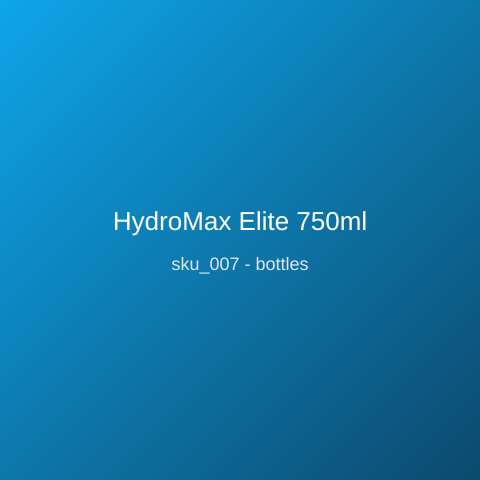

Price: ₹999
Double-wall vacuum-insulated 750ml bottle in 18/8 food-grade steel keeps drinks cold for 24 hours and hot for 12. Powder-coated matte finish resists scratches and sweat; leak-proof twist cap with carry loop; 310g; BPA-free; fits standard car cup holders; lifetime warranty on insulation.